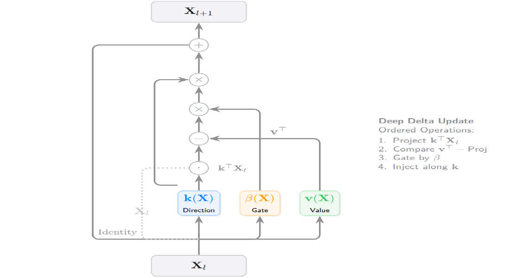
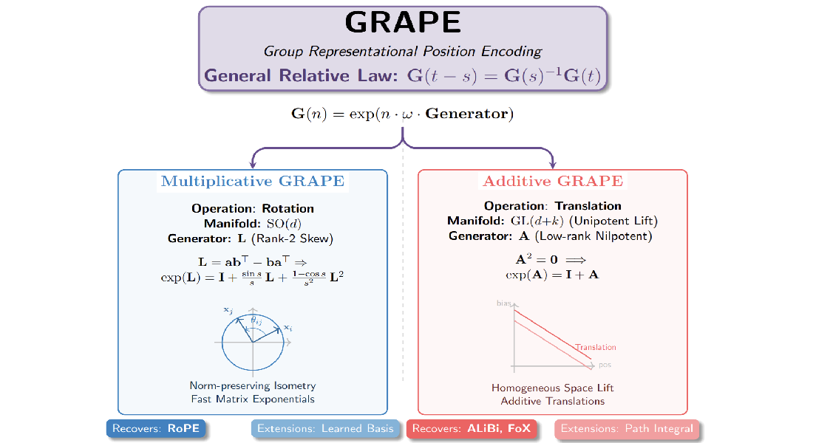

Deep Delta Learning
Deep Delta Learning

深度残差网络的有效性根本上依赖于恒等快捷连接。虽然这种机制有效地缓解了梯度消失问题，但它对特征变换施加了严格的加性归纳偏置，从而限制了网络建模复杂状态转换的能力。
在本文中，我们提出了一种名为深度增量学习（DDL）的新型架构，它通过使用可学习的、依赖于数据的几何变换来调制恒等快捷连接，从而泛化了标准残差连接。
这种变换被称为增量算子，它构成了对单位矩阵的秩为1的扰动，由反射方向向量 \(\mathbf{k}(\mathbf{X})\) 和门控标量 \(\beta(\mathbf{X})\) 参数化。
我们对该算子进行了谱分析，证明了门控 \(\beta(\mathbf{X})\) 能够实现恒等映射、正交投影和几何反射之间的动态插值。
此外，我们将残差更新重构为同步的秩为1的注入，其中门控充当动态步长，控制旧信息的擦除和新特征的写入。
这种统一使网络能够显式控制其逐层转换算子的谱，从而能够建模复杂的非单调动力学，同时保持门控残差架构的稳定训练特性。
The efficacy of deep residual networks is fundamentally predicated on the identity shortcut connection.
While this mechanism effectively mitigates the vanishing gradient problem, it imposes a strictly additive inductive bias on feature transformations, thereby limiting the network's capacity to model complex state transitions.
In this paper, we introduce Deep Delta Learning (DDL), a novel architecture that generalizes the standard residual connection by modulating the identity shortcut with a learnable, data-dependent geometric transformation.
This transformation, termed the Delta Operator, constitutes a rank-1 perturbation of the identity matrix, parameterized by a reflection direction vector \(\mathbf{k}(\mathbf{X})\) and a gating scalar \(\beta(\mathbf{X})\).
We provide a spectral analysis of this operator, demonstrating that the gate \(\beta(\mathbf{X})\) enables dynamic interpolation between identity mapping, orthogonal projection, and geometric reflection.
Furthermore, we restructure the residual update as a synchronous rank-1 injection, where the gate acts as a dynamic step size governing both the erasure of old information and the writing of new features.
This unification empowers the network to explicitly control the spectrum of its layer-wise transition operator, enabling the modeling of complex, non-monotonic dynamics while preserving the stable training characteristics of gated residual architectures.
